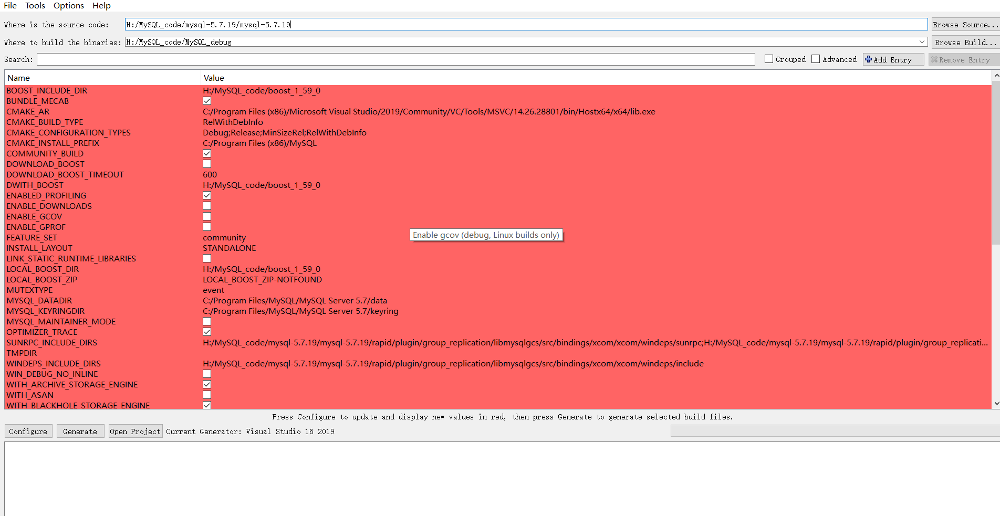
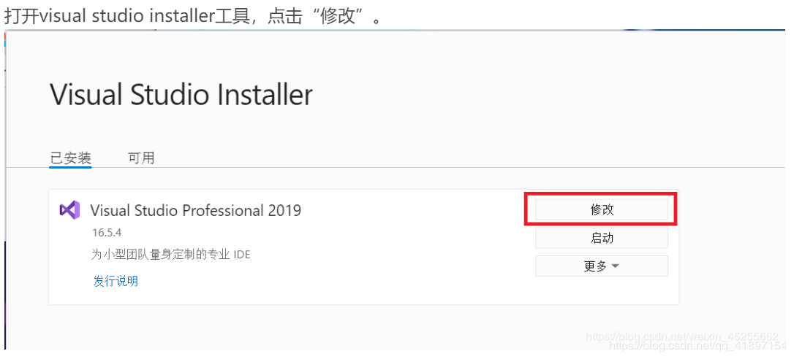
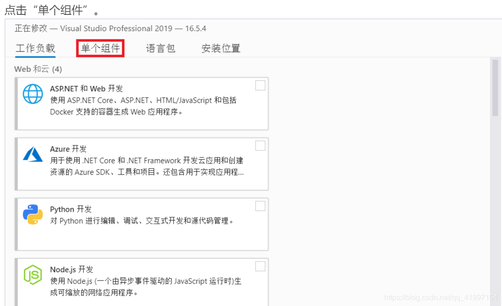
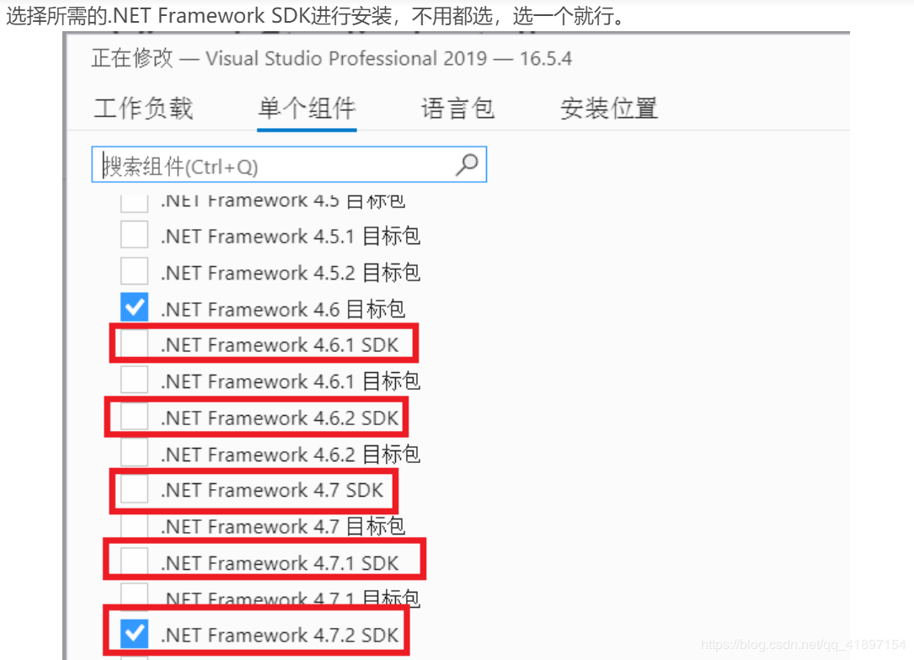
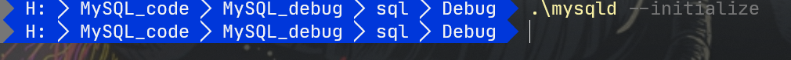
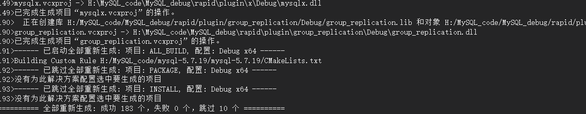

本文最后更新于：2020年7月28日 凌晨
1. 源码以及软件下载
- Visual Code community 2019
- MySQL源码5.7.19
- 与MySQL5.7.19配套的boost_1_59_0-msvc-14.0-64
- ActivePerl-5.28
- cmake-3.18.0
2. 源码的编译

3. VS编译遇到的报错问题
3.1 Call Stack (most recent call first): cmake/boost.cmake:238 (COULD_NOT_FIND_BOOST) CMakeList
boost的版本不对,改为boost_1_59_0就成功编译
3.2 “对COM 组件的调用返回了错误 HRESULT E_FAIL”无法加载项目



3.3 “该文件包含不能在当前代码页(936)中表示的字符。请将该文件保存为 Unicode 格式以防止数据丢失”
https://www.cnblogs.com/leokale-zz/p/11423953.html
3.4 运行报错
mysql.cc 文件中函数test_lc_time_sz 最后的DBUG_ASSERT(0); 需要改成DBUG_ASSERT(1);
3.5 编译成功后运行：mysqld: Could not create or access the registry key needed for the MySQL app
以管理员方式进行运行程序
https://blog.csdn.net/zeqi1991/article/details/96195127
3.6 运行报错Table ‘mysql.plugin’ doesn’t exist
删除data的文件夹内的所有的内容
sql \Debug \ .\mysqld —initialize

4. 结果

本博客所有文章除特别声明外，均采用 CC BY-SA 4.0 协议 ，转载请注明出处！